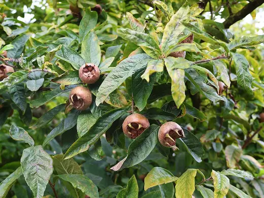
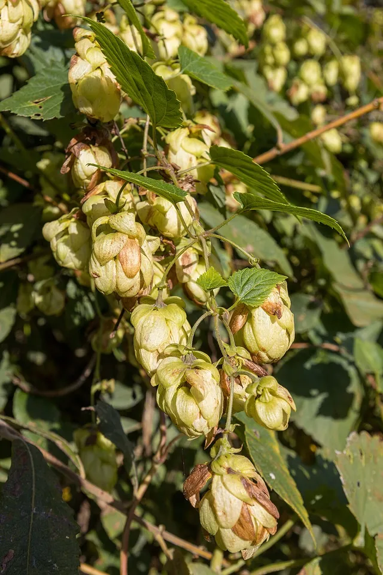
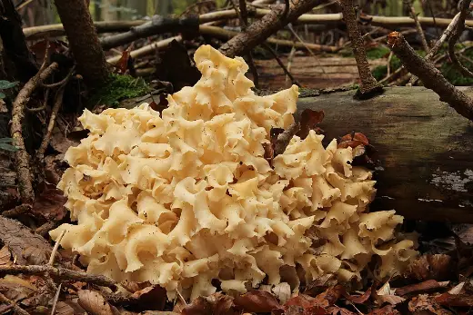

Wild food recipes from Germany
37 dishes made with foraged ingredients, from drinks and preserves to mains and desserts.
Drinks
 Elderflower syrup (Holunderblütensirup)Elderflower
Elderflower syrup (Holunderblütensirup)Elderflower Woodruff punch (Maibowle)Sweet woodruff
Woodruff punch (Maibowle)Sweet woodruff Sea buckthorn juice (Sanddornsaft)Sea buckthorn
Sea buckthorn juice (Sanddornsaft)Sea buckthorn Sloe liqueur (Schlehenlikör)Sloe
Sloe liqueur (Schlehenlikör)Sloe Rose hip tea (Hagebuttentee)Rose hips
Rose hip tea (Hagebuttentee)Rose hips Birch sap (Birkensaft)Birch sap
Birch sap (Birkensaft)Birch sap Wild pear schnapps (Wildbirnenschnaps)Wild pear
Wild pear schnapps (Wildbirnenschnaps)Wild pear
Starters & snacks
- Elderflower fritters (Hollerküchle)Elderflower
 Wild garlic soup (Bärlauchsuppe)Wild garlic
Wild garlic soup (Bärlauchsuppe)Wild garlic Roasted chestnuts (Maronen)Sweet chestnut
Roasted chestnuts (Maronen)Sweet chestnut Lamb's lettuce with bacon (Feldsalat)Lamb's lettuce
Lamb's lettuce with bacon (Feldsalat)Lamb's lettuce Chanterelles with scrambled egg (Pfifferlinge mit Rührei)Chanterelle
Chanterelles with scrambled egg (Pfifferlinge mit Rührei)Chanterelle Morels in cream (Rahmmorcheln)Morel
Morels in cream (Rahmmorcheln)Morel Fried saffron milk caps (gebratene Reizker)Saffron milk cap
Fried saffron milk caps (gebratene Reizker)Saffron milk cap
Sauces, preserves & sides
- Wild garlic pesto (Bärlauchpesto)Wild garlic
 Lingonberry compote (Preiselbeeren)Lingonberry
Lingonberry compote (Preiselbeeren)Lingonberry Dandelion syrup (Löwenzahnhonig)Dandelion
Dandelion syrup (Löwenzahnhonig)Dandelion Ground elder pesto (Gierschpesto)Ground elder
Ground elder pesto (Gierschpesto)Ground elder Rowan jelly (Vogelbeergelee)Rowan berries
Rowan jelly (Vogelbeergelee)Rowan berries Pickled wild cherriesWild cherry
Pickled wild cherriesWild cherry Horseradish with apple (Apfelkren)Horseradish
Horseradish with apple (Apfelkren)Horseradish
Medlar jelly (Mispelgelee)Medlar
Main course
 Nettle spinach (Brennnesselspinat)Stinging nettle
Nettle spinach (Brennnesselspinat)Stinging nettle- Wild garlic MaultaschenWild garlic

Hop shoots in butter (Hopfenspargel)Hop shoots Porcini in cream with dumplings (Steinpilze mit Knödel)Porcini
Porcini in cream with dumplings (Steinpilze mit Knödel)Porcini Green sauce (Grüne Soße) with wild herbsCommon sorrel, Ground elder, Chickweed, Watercress
Green sauce (Grüne Soße) with wild herbsCommon sorrel, Ground elder, Chickweed, Watercress Chicken of the woods schnitzelChicken of the woods
Chicken of the woods schnitzelChicken of the woods Saint George's mushroom omelette (Mairitterling-Omelett)St George's mushroom
Saint George's mushroom omelette (Mairitterling-Omelett)St George's mushroom
Cauliflower fungus in batter (Krause Glucke)Cauliflower fungus
 Bilberry pancakes (Heidelbeerpfannkuchen)Bilberry
Bilberry pancakes (Heidelbeerpfannkuchen)Bilberry Elderberry soup (Fliederbeersuppe)Elderberry
Elderberry soup (Fliederbeersuppe)Elderberry Red berry pudding (Rote Grütze)Wild raspberry, Wild blackcurrant
Red berry pudding (Rote Grütze)Wild raspberry, Wild blackcurrant Gooseberry meringue cake (Stachelbeerbaiser)Wild gooseberry
Gooseberry meringue cake (Stachelbeerbaiser)Wild gooseberry Damson cake (Zwetschgendatschi)Damson and bullace
Damson cake (Zwetschgendatschi)Damson and bullace